<!DOCTYPE html>
<html lang="en">

<head>
  <meta charset="utf-8" />
  <meta name="viewport" content="width=device-width, initial-scale=1.0, maximum-scale=1.0, user-scalable=no" />

  <title>Contributing to the Polkadot SDK</title>
  <link rel="icon" href="./../../assets/favicon.svg" />
  <link rel="shortcut icon" href="./../../assets/favicon.png" />
  <link rel="stylesheet" href="./../../dist/reset.css" />
  <link rel="stylesheet" href="./../../dist/reveal.css" />
  <link rel="stylesheet" href="./../.././assets/styles/PBA-theme.css" id="theme" />
  <link rel="stylesheet" href="./../../css/highlight/shades-of-purple.css" />

  <link rel="stylesheet" href="./../.././assets/styles/custom-classes.css" />

</head>

<body class="site">
  <header class="site-header">
    <!-- This logo is a link only on the watching server, not the production build -->
    <a href="">
      
    </a>
  </header>
  <main class="reveal">
    <article class="slides">
      <section  data-markdown><script type="text/template">

# Contributing to the Polkadot SDK
</script></section><section  data-markdown><script type="text/template">
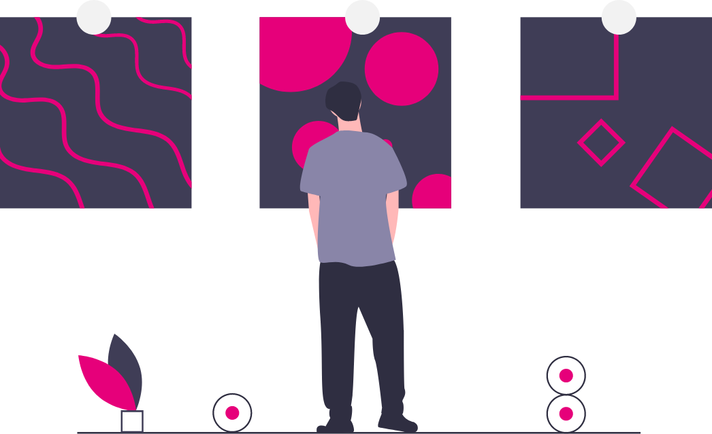
</script></section><section  data-markdown><script type="text/template">
## Prerequisite Knowledge

</br>

- Mid-Level Rust Programming Abilities
  - Fluency with the first 11 chapters of The Rust Book
- Mid-Level Understanding of Blockchains
  - Basics of Cryptography, Game Theory, Economics
  - Fundamentals of Bitcoin and Ethereum
  - Smart Contracts / State Machines
- Basic Understanding of Polkadot
</script></section><section  data-markdown><script type="text/template">
## Learn Rust for Substrate


<br/>

https://dotcodeschool.com/


</script></section><section  data-markdown><script type="text/template">
## The Polkadot Blockchain Academy

<!-- took screenshoot to save time -->


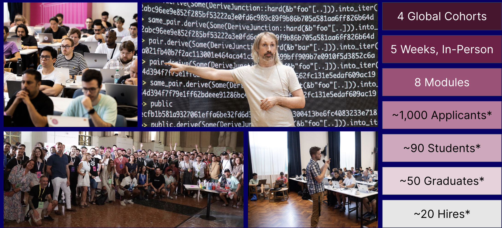


https://polkadot.network/academy/
</script></section><section  data-markdown><script type="text/template">
# I just graduated from the Polkadot Blockchain Academy…

#### _... now what?_
</script></section><section  data-markdown><script type="text/template">
### Polkadot SDK
</script></section><section  data-markdown><script type="text/template">
## The Mono Repo
<!-- skipped Polkadot SDK repo has evolved slide, not relevant for PBA-->
<!-- Originally bullet points were on right column -->

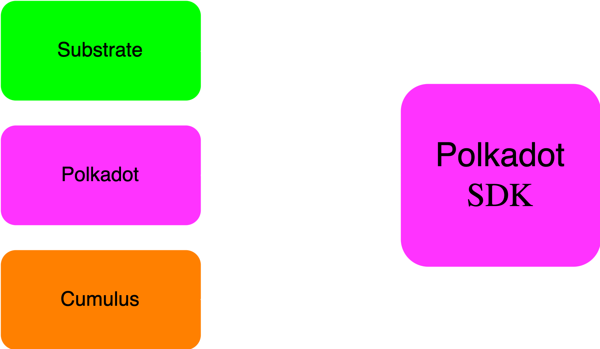

</br>

- Merging into a single repository simplifies the development process
- Eliminates the need for “companion” PRs across multiple repositories.
- Improves collaboration among team members. 
- Makes it easier to manage issues, pull requests, and documentation.

</script></section><section  data-markdown><script type="text/template">
## Runtime Extraction
<pba-cols>
<pba-col left>


</pba-col>

</br>

<span style="font-size:0.75em;">    

</br>

<pba-col right>

</br>

<pba-flex left>
Extraction of the various Polkadot Runtimes established decentralized ownership of this code. Includes:
</pba-flex>

</br>
<pba-flex left>

- Relay Chain Runtimes
  - Polkadot
  - Kusama

- System Parachains
  - Asset Hub
  - Bridges Hub
  - Collectives
  - etc...
  </pba-flex>

  </pba-col>
  </pba-cols>


</span>
</script></section><section  data-markdown><script type="text/template">
## Repository Ownership

</br>

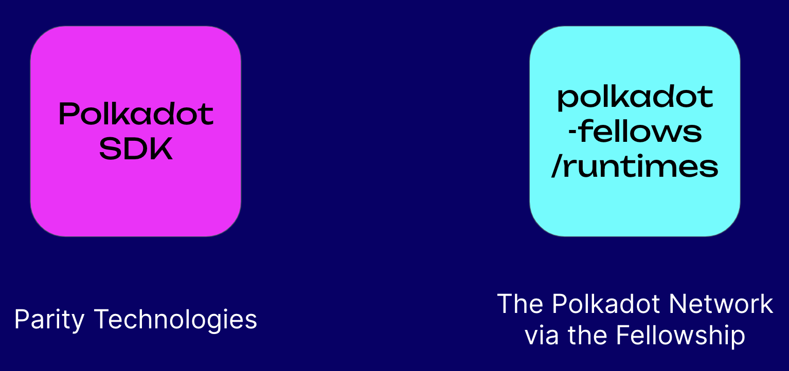

</script></section><section  data-markdown><script type="text/template">
## Polkadot RFCs

</br>

- Requests for Comment (RFCs) are proposed changes to the technical implementation of the Polkadot network.
- The Polkadot Fellowship reviews and provides feedback to the RFCs.
- RFC approval is done on-chain either by the fellowship or through public referendum.
- The Polkadot Fellowship also stewards forward approved RFCs.

</br>

https://github.com/polkadot-fellows/RFCs
</script></section><section  data-markdown><script type="text/template">
### Fellowship
<!-- original slides had 90 and -90 degree "Fellowship" text around a box-->
</script></section><section  data-markdown><script type="text/template">
## The Fellowship

</br>

- A technical organization that stewards the development of the Polkadot Network.
- Composed of core developers and researchers.
- Servants to the DOT holders via referendum signaling.

</br>

https://github.com/polkadot-fellows
</script></section><section  data-markdown><script type="text/template">
### Fellowship Manifesto
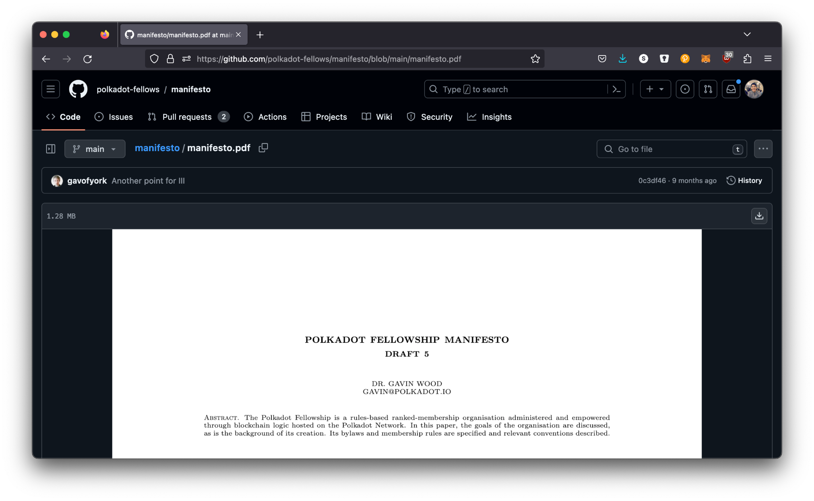

https://github.com/polkadot-fellows/manifesto

</script></section><section  data-markdown><script type="text/template">### Polkadot Fellows


</br>
The current Polkadot Fellows.
</script></section><section  data-markdown><script type="text/template">## Rank Summary

- The fellowship has different ranks based on their contributions to Polkadot.
- The requirements to be promoted are defined in the manifesto.
- Fellowship members can choose to accept a salary for their rank.
- Salary is based on the OECD average salary for engineers.

</script></section><section  data-markdown><script type="text/template">
## Ranks
<!-- TO DO need to have table only on left side to provide space for bullet points-->


| Dan  | Title           | Time from Dan I | Salary Factor (OECD) |
|------|-----------------|-----------------|----------------------|
| n/a  | Candidate       |       n/a       |          0.0         |
| I    | Humble          |       n/a       |         0.125        |
| II   | Proficient      |     ~1 year     |         0.25         |
| III  | Fellow          |     ~2 years    |          1.0         |
| IV   | Architect       |   &gt; 3 years  |          1.5         |
| V    | Architect Adept |   &gt; 4 years  |          2.0         |
| VI   | Grant Architect |   &gt; 5 years  |          2.5         |
| VII  | Free Master     |  &gt; 6 years!  |          2.5         |
| VIII | Master Constant |  &gt; 11 years! |          2.5         |
| IX   | Grand Master    |  &gt; 19 years! |          2.5         |


</br>
<span style="font-size:0.5em;">

Salary RFC: https://github.com/polkadot-fellows/RFCs/pull/50/
</br>
OECD: Organisation for Economic Co-operation and Development


</script></section><section  data-markdown><script type="text/template">
## Dan I

<!-- TO DO columns should be better aligned -->

<span style="font-size:0.75em;">

<pba-flex center>


_The requirements (condensed) to become a Dan I member of the Polkadot Fellowship are:_

</span>

</br>

- Three clear examples of a modest but substantial contribution to protocol development.
- Actively been involved in the design of a component deployed to the network.
- Substantially assisted in the analysis, or authoring of formalisation or implementation of a protocol component.
- Should be able to list all key goals, principles and tenets of Polkadot’s overall philosophy.

</pba-flex>
</script></section><section  data-markdown><script type="text/template">
## Dan I Contributions


</br>

<pba-flex center>


Possible examples of a “modest but substantial contribution” may be:

</br>

- identifying and correcting a non-trivial issue in protocol code or formalisation;
- being available and playing a crucial operational role for a network fix;
- proposing a reasonable and non-trivial protocol innovation; or
- doing a valuable, innovative and insightful refactoring or simplification.


</pba-flex> 


</script></section><section  data-markdown><script type="text/template">


</script></section><section  data-markdown><script type="text/template">
## Fellowship Clarity

</br>

- The Fellowship is a very new, and still developing organization.
- The Fellowship offers technical influence over the Polkadot Network and a regular income.
- It is attempting to provide human needs of consistent / regular income from a resilient decentralized source.
- The barrier to entry is intentionally _very high._
- It is NOT a requirement to contribute to the Polkadot SDK or broader ecosystem.
- It is NOT the path for everyone, even not necessarily for all core developers. 
</script></section><section  data-markdown><script type="text/template">
## My recommended path to becoming a fellow…

</br>

- Join a team in the Polkadot (or broader) ecosystem aligned with the values of the fellowship.
- Work with them to split your time between their work and core contributions to the Polkadot SDK.
  - A team aligned with the values of the fellowship should be elated to have a fellow on their team.
- Navigate your way to Dan III, a clear milestone to receive a full-time living salary for your work.
  - ~3 years to learn, grow, and develop.
- If you want, transition to becoming a full time decentralized contributor to Polkadot.
</script></section><section  data-markdown><script type="text/template">
## Issues / Ideas

<!-- original slides had 90 and -90 degree "ideas"/"issues" text around a box-->
</script></section><section  data-markdown><script type="text/template">
#### **Before you can contribute** you need to find an issue.
</script></section><section  data-markdown><script type="text/template">
## A common mistake…

</br>

- Don’t come to the Polkadot SDK with brand new features that you want to implement.
- Polkadot is already a huge codebase, and does not want to maintain more code.
- As a new contributor in the ecosystem, you don’t necessarily have the context and knowledge to best understand what needs to be done, and how to integrate new features into the repo.
- The best way to start becoming an expert at Polkadot SDK (or any open source repo) is to pick up existing issues created by experts who can also mentor you.
</script></section><section  data-markdown><script type="text/template">## Find the right issues

</br>


_Not all issues are created equal:_

- _Difficulty:_ What level of Rust and/or Substrate expertise do you need to have to complete the issue?
- _Sensitivity:_ What parts of the codebase does the issue touch, and how could that potentially affect the network?
- _Clarity:_ How well understood is the solution to the issue?
- _Urgency:_ How quickly does this PR need to be completed?
</script></section><section  data-markdown><script type="text/template">

#### Issue Filters: C1-Mentor, C2-Good-First-Issue, D0-Easy


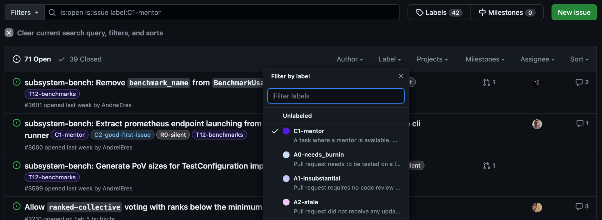

</script></section><section  data-markdown><script type="text/template">
## A Nonsensitive Entry Point to the Runtime

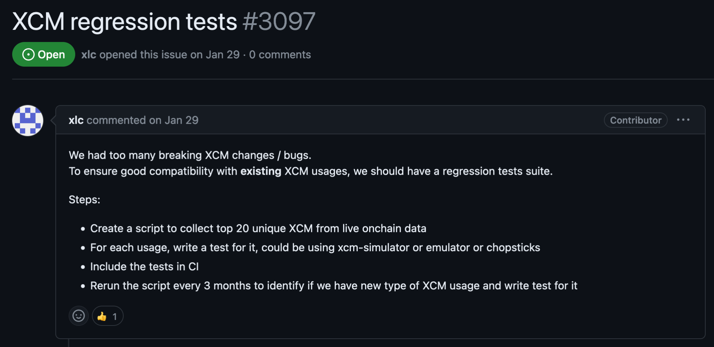

</script></section><section  data-markdown><script type="text/template">
### An Issue that Rust Compiler Can Entirely Check

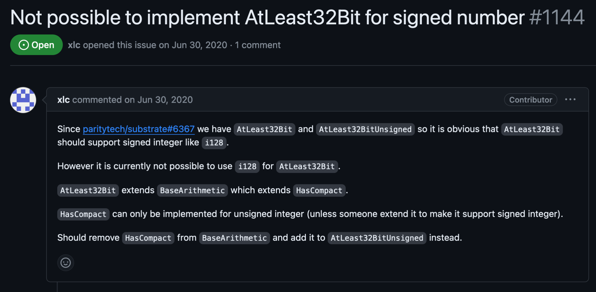

</script></section><section  data-markdown><script type="text/template">## Become a subject expert and code owner

</br>

- Training new open source contributors is very much a long term investment mindset.
- You are more likely to find issues to work on and people to mentor you if you create a focus area for your contributions.
- If you can become an expert in a topic area, you will be able to develop deeper and more relevant skills, and be able to transfer those skills to other topic areas.

</script></section><section  data-markdown><script type="text/template">## Keep conversations in public.

</br>

- The urge is to always try to open a direct message to quickly discuss and resolve questions.
- Culture for Polkadot is: global and async.
- Long form messages force writers to think more deeply about what is being asked and answered.
- Use DMs to ping for attention, but bring important conversations and information to the Forum, GitHub, and other public spaces.
  - You will be surprised how many lurkers use these conversations to educate themselves.

</script></section><section  data-markdown><script type="text/template">### Pull Requests & Reviews
<!-- original slides had 90 and -90 degree Pull requests and reviews text around a box-->

</script></section><section  data-markdown><script type="text/template">## Breakdown Large PRs

</br>

A large PR is the easiest way to get repository owners to place your code at the bottom of their “TODO” stack. Split up large PRs into multiple parts!

- Take advantage of the Rust compiler.
  - Create a PR with just low sensitivity type changes
  - Sensitive logical changes in another PR which should be more compact to review.
  - Chain their dependencies on each other.
- Where you are refactoring many components (like pallets), do them one at a time where possible.

</script></section><section  data-markdown><script type="text/template">
## Write Tests!

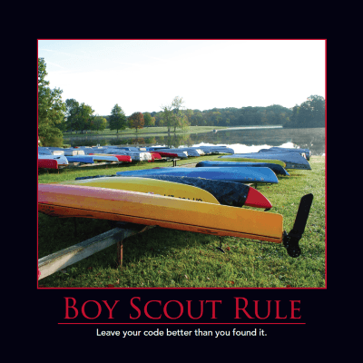


- The best way for a reviewer to sanity check your work is to read and understand your tests, and verify it passes.
    - You will be surprised how even the most trivial changes can (and should) include a test!
- Try to get additional test scenarios from the original issue creator, to ensure your solution aligns with their vision of the problem.
- Write additional tests to cement your understanding of existing code, and add additional code coverage.

</script></section><section  data-markdown><script type="text/template">
## Write Docs!

</br>

- Code always needs to be contextualized into what problem it is trying to solve and how it is choosing to solve that problem.
- Documentation in the code should allow a reader to answer what the intention of the code is.
- Documentation in the PR should guide the reviewer through the PR, highlighting the key areas of importance and the crux of the changes.
</script></section><section  data-markdown><script type="text/template">
## Review Your Own PR

</br>

- Once you have a final PR open, and ready for review, go through and review your own PR.
- Leave comments on code that you might want to highlight for other reviewers.
    - For example sensitive changes that need extra scrutiny.
- Catch any dead code, leftover comments, todos, formatting problems, and other low hanging fruit.
    - As a reviewer, it is pretty discouraging to see the PR is not in great shape to be merged when reviewing it.
</script></section><section  data-markdown><script type="text/template">
## My First PR 😬


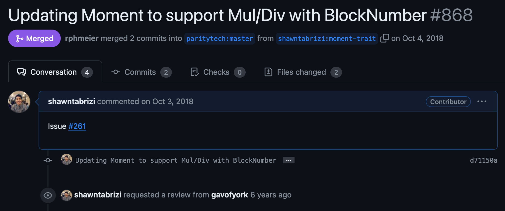

</script></section><section  data-markdown><script type="text/template">
## Get Paid!

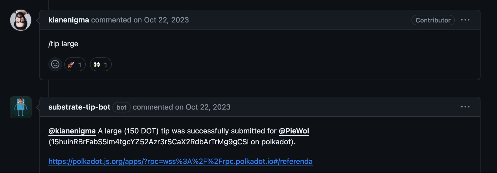

</script></section><section  data-markdown><script type="text/template">
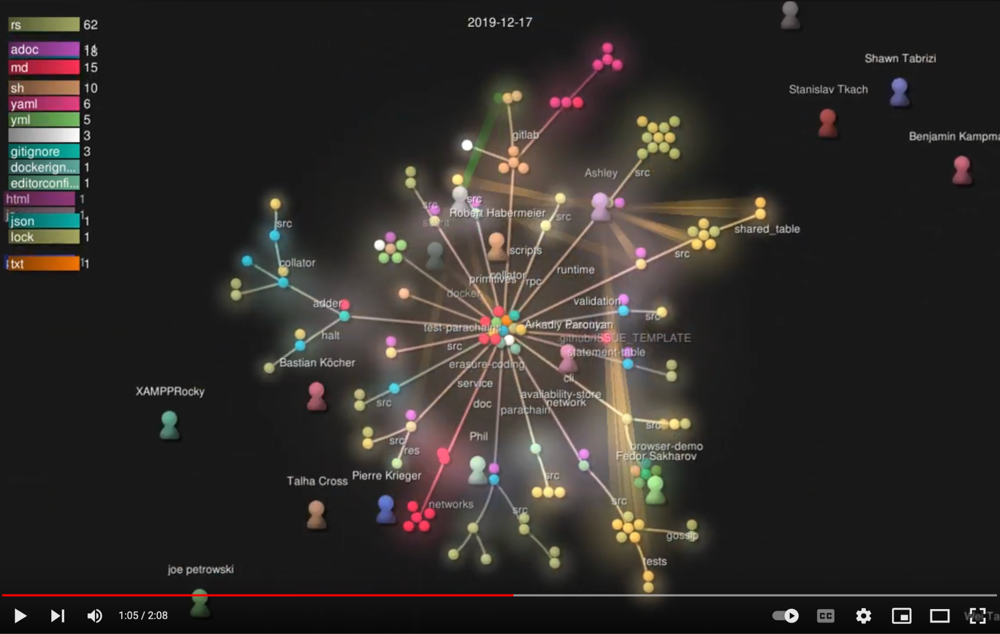


</br>
Expect Chaos.

</script></section><section  data-markdown><script type="text/template">

### Questions?


 <script src="/dist/reveal.js">__SCRIPT_END__

  <script src="/plugin/markdown/markdown.js">__SCRIPT_END__
  <script src="/plugin/highlight/highlight.js">__SCRIPT_END__
  <script src="/plugin/zoom/zoom.js">__SCRIPT_END__
  <script src="/plugin/notes/notes.js">__SCRIPT_END__
  <script src="/plugin/math/math.js">__SCRIPT_END__

  <script src="/assets/plugin/mermaid.js">__SCRIPT_END__
  <script src="/assets/plugin/mermaid-theme.js">__SCRIPT_END__

  <script src="/assets/plugin/chart/chart.js">__SCRIPT_END__
  <script src="/assets/plugin/chart/chart.min.js">__SCRIPT_END__

  <script src="/assets/plugin/tailwindcss.min.js">__SCRIPT_END__

  <script>
    function extend() {
      var target = {};
      for (var i = 0; i < arguments.length; i++) {
        var source = arguments[i];
        for (var key in source) {
          if (source.hasOwnProperty(key)) {
            target[key] = source[key];
          }
        }
      }
      return target;
    }

    // default options to init reveal.js
    var defaultOptions = {
      controls: true,
      progress: true,
      history: true,
      center: true,
      transition: 'default', // none/fade/slide/convex/concave/zoom
      slideNumber: true,
      mermaid: {
        startOnLoad: false,
        logLevel: 3,
        theme: 'base',
        themeVariables: {
          primaryColor: purple,
          primaryTextColor: white,
          primaryBorderColor: pink,
          lineColor: pink,
          secondaryColor: lightPurple,
          tertiaryColor: lightPurple,
        },
      },
      chart: {
        defaults: {
          color: 'lightgray', // color of labels
          scale: {
            beginAtZero: true,
            ticks: { stepSize: 1 },
            grid: { color: "lightgray" }, // color of grid lines
          },
        },
        line: { borderColor: ["#ccc", "#E6007A", "#6D3AEE"], "borderDash": [[5, 10], [0, 0]] },
        bar: { backgroundColor: ["#ccc", "#E6007A", "#6D3AEE"] },
      },
      plugins: [
        RevealMarkdown,
        RevealHighlight,
        RevealZoom,
        RevealNotes,
        RevealMath,
        RevealMermaid,
        RevealChart
      ]
    };

    // options from URL query string
    var queryOptions = Reveal().getQueryHash() || {};

    var options = extend(defaultOptions, {"width":1400,"height":900,"margin":0,"minScale":0.2,"maxScale":2,"transition":"none","controls":true,"progress":true,"center":true,"slideNumber":true,"backgroundTransition":"fade"}, queryOptions);
  __SCRIPT_END__


  <script>
    Reveal.initialize(options);
  __SCRIPT_END__</script></section>
    </article>
  </main>

  <script src="./../../dist/reveal.js"></script>

  <script src="./../../plugin/markdown/markdown.js"></script>
  <script src="./../../plugin/highlight/highlight.js"></script>
  <script src="./../../plugin/zoom/zoom.js"></script>
  <script src="./../../plugin/notes/notes.js"></script>
  <script src="./../../plugin/math/math.js"></script>

  <script src="./../../assets/plugin/mermaid.js"></script>
  <script src="./../../assets/plugin/mermaid-theme.js"></script>

  <script src="./../../assets/plugin/chart/chart.js"></script>
  <script src="./../../assets/plugin/chart/chart.min.js"></script>

  <script src="./../../assets/plugin/tailwindcss.min.js"></script>

  <script>
    function extend() {
      var target = {};
      for (var i = 0; i < arguments.length; i++) {
        var source = arguments[i];
        for (var key in source) {
          if (source.hasOwnProperty(key)) {
            target[key] = source[key];
          }
        }
      }
      return target;
    }

    // default options to init reveal.js
    var defaultOptions = {
      controls: true,
      progress: true,
      history: true,
      center: true,
      transition: 'default', // none/fade/slide/convex/concave/zoom
      slideNumber: true,
      mermaid: {
        startOnLoad: false,
        logLevel: 3,
        theme: 'base',
        themeVariables: {
          primaryColor: purple,
          primaryTextColor: white,
          primaryBorderColor: pink,
          lineColor: pink,
          secondaryColor: lightPurple,
          tertiaryColor: lightPurple,
        },
      },
      chart: {
        defaults: {
          color: 'lightgray', // color of labels
          scale: {
            beginAtZero: true,
            ticks: { stepSize: 1 },
            grid: { color: "lightgray" }, // color of grid lines
          },
        },
        line: { borderColor: ["#ccc", "#E6007A", "#6D3AEE"], "borderDash": [[5, 10], [0, 0]] },
        bar: { backgroundColor: ["#ccc", "#E6007A", "#6D3AEE"] },
      },
      plugins: [
        RevealMarkdown,
        RevealHighlight,
        RevealZoom,
        RevealNotes,
        RevealMath,
        RevealMermaid,
        RevealChart
      ]
    };

    // options from URL query string
    var queryOptions = Reveal().getQueryHash() || {};

    var options = extend(defaultOptions, {"width":1400,"height":900,"margin":0,"minScale":0.2,"maxScale":2,"transition":"none","controls":true,"progress":true,"center":true,"slideNumber":true,"backgroundTransition":"fade"}, queryOptions);
  </script>


  <script>
    Reveal.initialize(options);
  </script>
</body>

</html>
